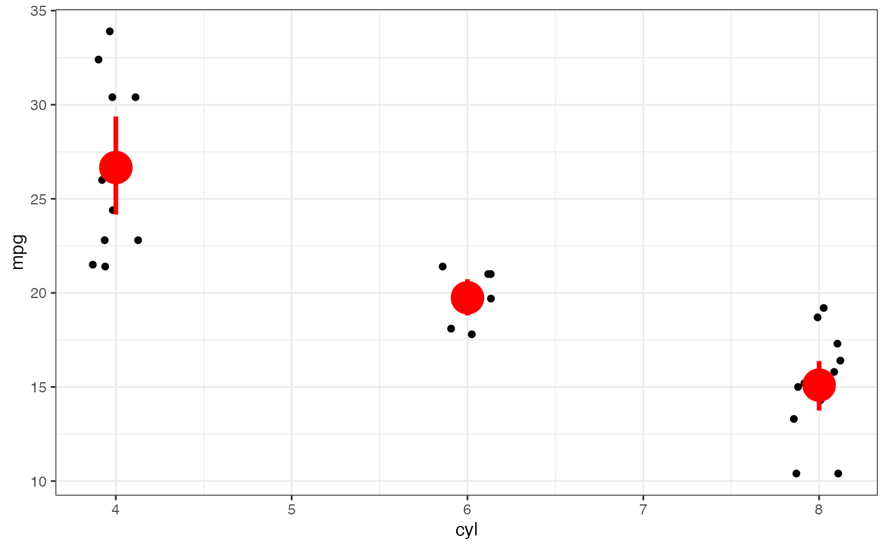
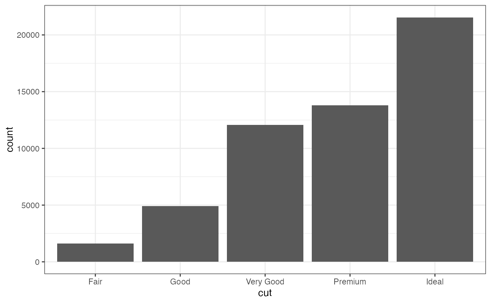
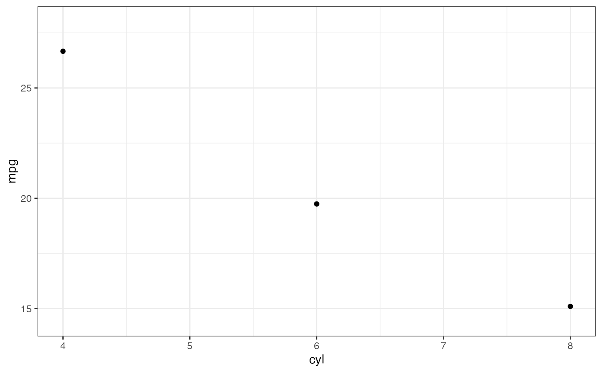
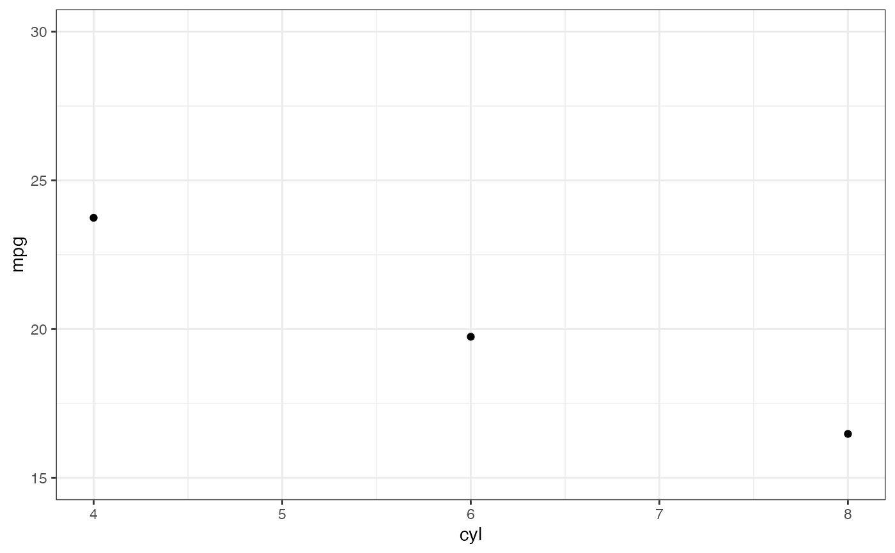
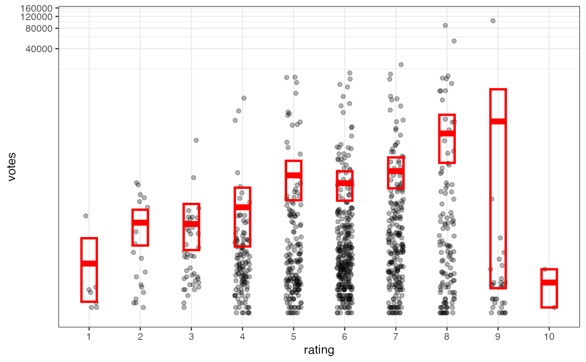

Formula interface to geom_linerange() and geom_pointrange()
Source:R/gf_functions.R, R/ggstance.R
gf_linerange.RdVarious ways of representing a vertical interval defined by x,
ymin and ymax. Each case draws a single graphical object.
gf_linerange( object = NULL, gformula = NULL, data = NULL, ..., alpha, color, group, linetype, size, xlab, ylab, title, subtitle, caption, geom = "linerange", stat = "identity", position = "identity", show.legend = NA, show.help = NULL, inherit = TRUE, environment = parent.frame() ) gf_pointrange( object = NULL, gformula = NULL, data = NULL, ..., alpha, color, group, linetype, size, fatten = 2, xlab, ylab, title, subtitle, caption, geom = "pointrange", stat = "identity", position = "identity", show.legend = NA, show.help = NULL, inherit = TRUE, environment = parent.frame() ) gf_summary( object = NULL, gformula = NULL, data = NULL, ..., alpha, color, group, linetype, size, fun.y = NULL, fun.ymax = NULL, fun.ymin = NULL, fun.args = list(), fatten = 2, xlab, ylab, title, subtitle, caption, geom = "pointrange", stat = "summary", position = "identity", show.legend = NA, show.help = NULL, inherit = TRUE, environment = parent.frame() ) gf_linerangeh( object = NULL, gformula = NULL, data = NULL, ..., alpha, color, group, linetype, size, xlab, ylab, title, subtitle, caption, geom = "linerangeh", stat = "identity", position = "identity", show.legend = NA, show.help = NULL, inherit = TRUE, environment = parent.frame() ) gf_pointrangeh( object = NULL, gformula = NULL, data = NULL, ..., alpha, color, group, linetype, size, xlab, ylab, title, subtitle, caption, geom = "pointrangeh", stat = "identity", position = "identity", show.legend = NA, show.help = NULL, inherit = TRUE, environment = parent.frame() )
Arguments
| object | When chaining, this holds an object produced in the earlier portions of the chain. Most users can safely ignore this argument. See details and examples. |
|---|---|
| gformula | A formula with shape |
| data | The data to be displayed in this layer. There are three options: If A A |
| ... | Additional arguments. Typically these are
(a) ggplot2 aesthetics to be set with |
| alpha | Opacity (0 = invisible, 1 = opaque). |
| color | A color or a formula used for mapping color. |
| group | Used for grouping. |
| linetype | A linetype (numeric or "dashed", "dotted", etc.) or a formula used for mapping linetype. |
| size | A numeric size or a formula used for mapping size. |
| xlab | Label for x-axis. See also |
| ylab | Label for y-axis. See also |
| title | Title, sub-title, and caption for the plot.
See also |
| subtitle | Title, sub-title, and caption for the plot.
See also |
| caption | Title, sub-title, and caption for the plot.
See also |
| geom | A character string naming the geom used to make the layer. |
| stat | The statistical transformation to use on the data for this layer, as a string. |
| position | Position adjustment, either as a string, or the result of a call to a position adjustment function. |
| show.legend | logical. Should this layer be included in the legends?
|
| show.help | If |
| inherit | A logical indicating whether default attributes are inherited. |
| environment | An environment in which to look for variables not found in |
| fatten | A multiplicative factor used to increase the size of the
middle bar in |
| fun.y | Deprecated, use the versions specified above instead. |
| fun.ymax | Deprecated, use the versions specified above instead. |
| fun.ymin | Deprecated, use the versions specified above instead. |
| fun.args | Optional additional arguments passed on to the functions. |
See also
Examples
gf_linerange()#> #> #> #> #> #>gf_ribbon(low_temp + high_temp ~ date, data = mosaicData::Weather, fill = ~city, alpha = 0.4 ) %>% gf_theme(theme = theme_minimal())gf_linerange( low_temp + high_temp ~ date | city ~ ., data = mosaicData::Weather, color = ~ ((low_temp + high_temp) / 2) ) %>% gf_refine(scale_colour_gradientn(colors = rev(rainbow(5)))) %>% gf_labs(color = "mid-temp")# Chaining in the data mosaicData::Weather %>% gf_ribbon(low_temp + high_temp ~ date, alpha = 0.4) %>% gf_facet_grid(city ~ .)if (require(mosaicData) && require(dplyr)) { HELP2 <- HELPrct %>% group_by(substance, sex) %>% summarise( age = NA, mean.age = mean(age), median.age = median(age), max.age = max(age), min.age = min(age), sd.age = sd(age), lo = mean.age - sd.age, hi = mean.age + sd.age ) gf_jitter(age ~ substance, data = HELPrct, alpha = 0.5, width = 0.2, height = 0, color = "skyblue") %>% gf_pointrange(mean.age + lo + hi ~ substance, data = HELP2) %>% gf_facet_grid(~sex) gf_jitter(age ~ substance, data = HELPrct, alpha = 0.5, width = 0.2, height = 0, color = "skyblue") %>% gf_errorbar(lo + hi ~ substance, data = HELP2, inherit = FALSE) %>% gf_facet_grid(~sex) # width is defined differently for gf_boxplot() and gf_jitter() # * for gf_boxplot() it is the full width of the box. # * for gf_jitter() it is half that -- the maximum amount added or subtracted. gf_boxplot(age ~ substance, data = HELPrct, width = 0.4) %>% gf_jitter(width = 0.4, height = 0, color = "skyblue", alpha = 0.5) gf_boxplot(age ~ substance, data = HELPrct, width = 0.4) %>% gf_jitter(width = 0.2, height = 0, color = "skyblue", alpha = 0.5) }#>p %>% gf_summary(fun.data = "mean_cl_boot", color = "red", size = 2)# You can supply individual functions to summarise the value at # each x: p %>% gf_summary(fun.y = "median", color = "red", size = 2, geom = "point")#>p %>% gf_summary(fun.y = "mean", color = "red", size = 2, geom = "point") %>% gf_summary(fun.y = mean, geom = "line")#>#>p %>% gf_summary(fun.y = mean, fun.ymin = min, fun.ymax = max, color = "red")#>p %>% gf_summary(fun.ymin = min, fun.ymax = max, color = "red", geom = "linerange")#>#>#>#>#>#># Don't use gf_lims() to zoom into a summary plot - this throws the # data away p <- gf_summary(mpg ~ cyl, data = mtcars, fun.y = "mean", geom = "point") p#>#> Warning: Removed 9 rows containing non-finite values (stat_summary).#>#># A set of useful summary functions is provided from the Hmisc package. p <- gf_jitter(mpg ~ cyl, data = mtcars, width = 0.15, height = 0); pp %>% gf_summary(fun.data = mean_cl_boot, color = "red")p %>% gf_summary(fun.data = mean_cl_boot, color = "red", geom = "crossbar")p %>% gf_summary(fun.data = mean_sdl, group = ~ cyl, color = "red", geom = "crossbar", width = 0.3)p %>% gf_summary(group = ~ cyl, color = "red", geom = "crossbar", width = 0.3, fun.data = mean_sdl, fun.args = list(mult = 1))p %>% gf_summary(fun.data = median_hilow, group = ~ cyl, color = "red", geom = "crossbar", width = 0.3)# An example with highly skewed distributions: if (require("ggplot2movies")) { set.seed(596) Mov <- movies[sample(nrow(movies), 1000), ] m2 <- gf_jitter(votes ~ factor(round(rating)), data = Mov, width = 0.15, height = 0, alpha = 0.3) m2 <- m2 %>% gf_summary(fun.data = "mean_cl_boot", geom = "crossbar", colour = "red", width = 0.3) %>% gf_labs(x = "rating") m2 # Notice how the overplotting skews off visual perception of the mean # supplementing the raw data with summary statistics is _very_ important # Next, we'll look at votes on a log scale. # Transforming the scale means the data are transformed # first, after which statistics are computed: m2 %>% gf_refine(scale_y_log10()) # Transforming the coordinate system occurs after the # statistic has been computed. This means we're calculating the summary on the raw data # and stretching the geoms onto the log scale. Compare the widths of the # standard errors. m2 %>% gf_refine(coord_trans(y="log10")) }#>gf_linerangeh(date ~ low_temp + high_temp | ~city, data = mosaicData::Weather, color = ~avg_temp ) %>% gf_refine(scale_color_viridis_c(begin = 0.1, end = 0.9, option = "C"))gf_linerange(date ~ low_temp + high_temp | ~city, data = mosaicData::Weather, color = ~avg_temp, orientation = 'y' ) %>% gf_refine(scale_color_viridis_c(begin = 0.1, end = 0.9, option = "C"))gf_pointrangeh(date ~ avg_temp + low_temp + high_temp | ~city, data = Weather, color = ~avg_temp ) %>% gf_refine(scale_color_viridis_c(begin = 0.1, end = 0.9, option = "C"))